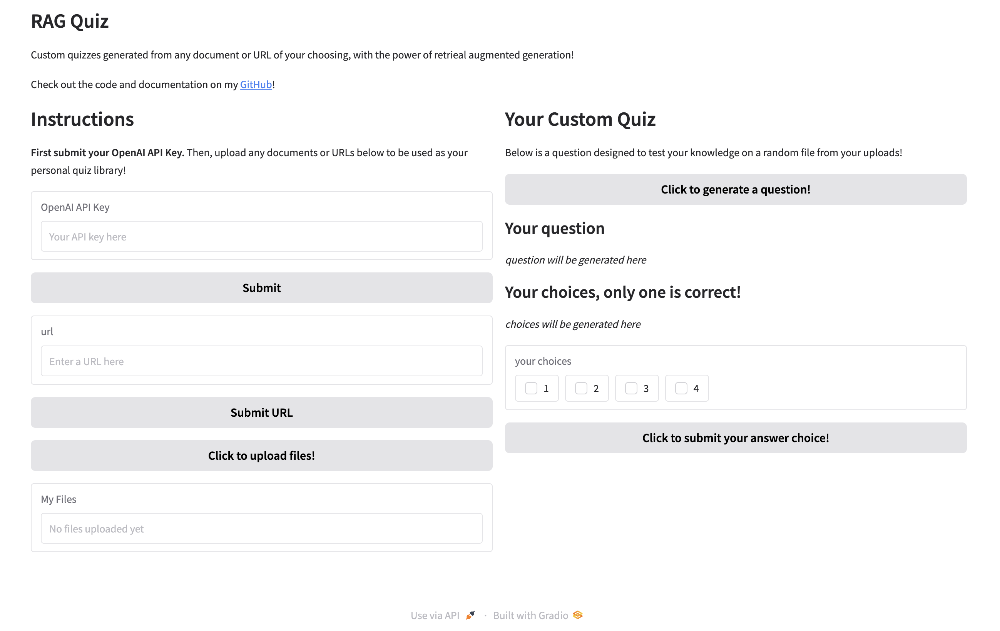

Personal RAG Quiz System
Using retrieval augmented generation to help you learn what you want to learn!

Introduction
You've most likely used LLM platforms like ChatGPT or Claude to answer your burning questions about various topics, but how do you know where the model is getting its answers from? How can you be sure the sources are reliable, or relevant to your specific situation?
Retrieval augmented generation (RAG) is the answer! RAG essentially allows the model to use documents or resources you provide directly as a source to answer your questions! Want to understand the main ideas behind a long paper you're reading? Just upload the pdf and have the AI read through it for you! Want to find the specific instruction you're looking for in a dense text manual for a complicated tool? RAG can pinpoint it for you and even tell you the exact page it's on!
What is this tool?
As a simple demonstration of just how capable RAG is, and how simple it can be to apply, I created a RAG-powered custom quiz app!
This gradio demo is powered by OpenAI's gpt-4o model behind the scenes, and allows you to upload any number of documents you wish. It uses the OpenAI API assistants feature with file search capability (Official API Docs). On the right hand side, when you click generate, the system will generate a quiz question to help test your knowledge about a random document selected from your custom library!
In the URL section, I have also implemented the capability to perform RAG on any website with text content! Simply paste in the URL of a website, and the system will use web scraping with the Selenium Python library to get any relevant text from the page to use for retrieval!
NOTE: this demo is still a work in progress, so currently the generation output is just the entire quiz question, correct answer, and answer choices. Soon, I intend to implement functionality to actually take the quiz. The UI will only show the question along with several checkboxes for the answer choices and a submit button. Then the quiz will tell you whether you got the question correct or not, along with an explanation retrieved directly from the relevant document (along with citation).
Implementation note: structured outputs
Currently, I am just enforcing a structured output through prompting by providing the model with an example JSON template and asking it to generate output in this format. While this is not a robust method I have found through personal experience that for more capable LLMs it is almost always sufficient to reliably get expected structure the majority of the time.
JSON Prompt Used:
"""
Please provide your question and correct answer using the following JSON format:
{
"question": "
Example output (from Vision Transformer paper):
{
"question": "Which optimization algorithm was found unconventional but motivated a switch during the ResNet experiments for fine-tuning?",
"choiceA": ["A", "SGD"],
"choiceB": ["B", "Adam"],
"choiceC": ["C", "RMSProp"],
"choiceD": ["D", "AdaGrad"],
"correct answer": "B"
}
The Demo
Below is a screenshot of the main UI of the app, showing the features described earlier. Feel free to go to my GitHub to download and test out the app for yourself! Note, you will have to provide your own OpenAI API key!
